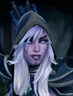
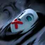

Not in the normal shop. This is one of the “spare” Undead pieces: you mainly get it when a piece holding an Ascetic's Cap is reborn as a random Undead, or through Pandaren fishing.

Gust
Active ability: Activates on full mana
Releases a wave that silences and knocks back enemy pieces with magical damage dealt.
| ★ | ★★ | ★★★ | |
|---|---|---|---|
| Wave Speed | 2000.0 | ||
| Wave Width | 250 | ||
| Silence Duration | 3 | 4 | 5 |
| Wave Distance | 500 | 600 | 800 |
| Knockback Grids | 2 | 3 | 4 |
| Magical Damage | 100 | 150 | 200 |
| Cooldown (s) | 10 | 8 | 6 |
| Mana cost | 100 | ||
Traxex is rather fond of the tranquility of magical combat, calling on her drow heritage to end the incantations of opposing magi.
Stats
| ★ | ★★ | ★★★ | |
|---|---|---|---|
| Health | 600 | 1200 | 2400 |
| Mana | 100 | 100 | 100 |
| Armor | 4 | 4 | 4 |
| Magic resistance | 10% | 10% | 10% |
| Attack damage | 70–100 | 140–200 | 280–400 |
| Attack interval (s) | 0.9 | 0.9 | 0.9 |
| Attack range | 600 | 600 | 600 |
| Move speed | 500 | 500 | 500 |
 Undead · Plague
Undead · Plague
- (3) All non-Undead pieces on the board lose 10% max HP.
- (6) They lose another 30% (-40% total).
- (9) Plagued pieces also lose 5% max HP every 2s, down to a minimum of 5% of their base max HP.
 Hunter · Aimed Shot
Hunter · Aimed Shot
Hunters always attack the enemy with the lowest current health within attack range. Wizards and other low-priority units are picked last.
- (3) Hunters' attacks have a 50% chance to be a precise shot: it can't miss and gives -5 armor for 5s.
- (6) Hunters get a separate 80% chance for a precise shot: it can't miss and gives -8 armor for 8s. This stacks with the (3) debuff.
- (9) Precise shots also knock the target back 1 grid and trigger an extra attack (at most once every 0.5s).